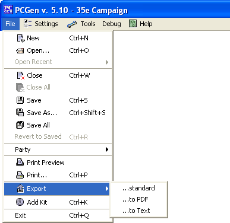

The Export option allows the user to export the PC from PCGen to another format to be used with other applications. When the user selects the Export option it will prompt for one of two additional selections: Standard or to PDF. These selections allow the user if they wish to either export the program to a standard format: XML, html, .doc, .txt, etc. or to a PDF file to be viewed with Adobe Acrobats reader.